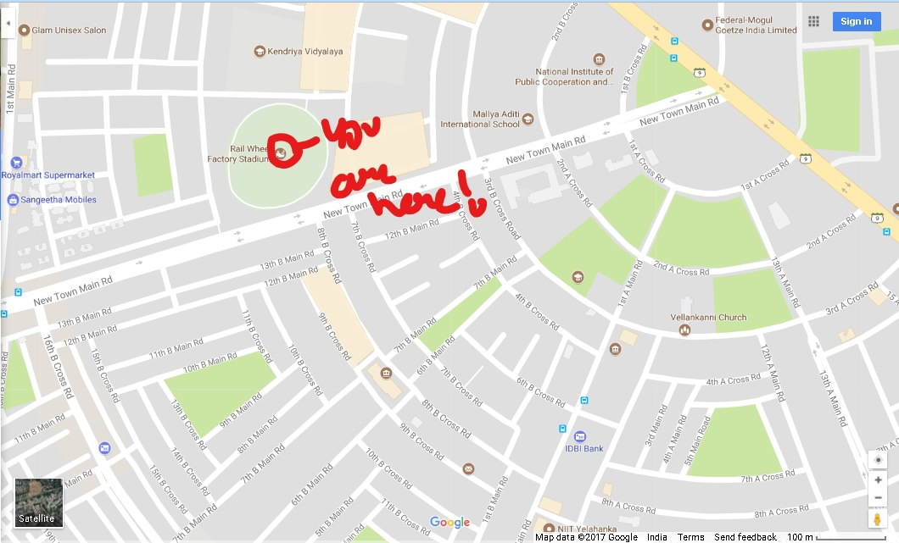

RIDDLE 4
NAME: Mr. Justin Chopra
AGE: 24
REASON OF DEATH: Strangled before stabbing
KILLER: Serial black clothed killer
EVIDENCE: Black sweater was used to strangle the man
INFORMATION:Victim was having a large amount of debt. Worked as a ticket collector.
RIDDLE 5: When ELIGIBLE to drive you shall PASS from death office.

MARK URSELF FOR I SHALL RIDE HERE